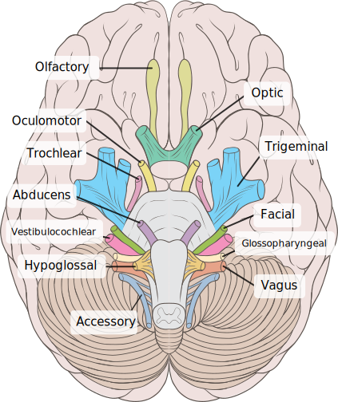

脑神经
传统上认为一共有12对脑神经，其中10对分布于头面部，都是由脑干发出。

| 编号 | 名称 | 性质 | 连脑部位 | 进出颅腔部位 | 核团 | 功能 | |
|---|---|---|---|---|---|---|---|
| I | 嗅神经 Olfactory nerve | 感觉性 | 端脑 | 筛孔 | 嗅前核（Anterior olfactory nucleus） | 传递嗅觉信息 | |
| II | 视神经 Optic nerve | 感觉性 | 间脑 | 视神经管（Optic canal） | 视网膜神经节细胞 | 向大脑传递视觉信息 | |
| III | 动眼神经 Oculomotor nerve | 运动性 Oculomotor nerve | 中脑前部 | 眶上裂（Superior orbital fissure） | 动眼神经核（Oculomotor nucleus） | 支配上睑举肌，上直肌、内直肌、下直肌和下斜肌，来协同完成眼球的运动；支配瞳孔括约肌和睫状体的收缩。 | |
| IV | 滑车神经 Trochlear nerve | 运动性 | 中脑后部 | 眶上裂 | 滑车神经核（Trochlear nucleus） | 支配上斜肌（Superior oblique muscle），来控制眼球的水平或者汇聚运动 | |
| V | 三叉神经 Trigeminal nerve | 混合性 | 脑桥 | 眶上裂(眼神经)，圆孔(上颌神经)，卵圆孔(下颌神经) | 三叉神经核感觉主核，三叉神经脊束核，中脑三叉神经核，三叉神经运动核 | 接受面部的感觉输入；支配咀嚼肌的收缩 | |
| VI | 外展神经 Abducens nerve | 运动性 | 脑桥前缘 | 眶上裂 | 外展神经核 | 支配外直肌 | |
| VII | 颜面神经 Facial nerve | 混合性 | 脑桥（橄榄核之上桥小脑角部位） | 内耳道（Internal acoustic meatus）、茎乳突孔（Stylomastoid foramen） | 面神经核，孤束核，上涎神经核 | 接收舌肌前三分之二部位的感觉输入；支配面部表情肌、二腹肌、镫骨肌；支配唾液腺和泪腺的分泌。 | |
| VIII | 位听神经 Vestibulocochlear nerve | 感觉性 | 脑桥 | 内耳道 | 前庭神经核，耳蜗核 | 接受声音、旋转、重力（对保持平衡和运动非常重要）的感觉输入。前庭分支和耳蜗分支主要传递听觉。 | |
| IX | 舌咽神经 Glossopharyngeal nerve | 混合性 | 延髓 | 颈静脉孔(Jugular foramen) | 疑核、下涎核、孤束核 | 接受舌部后三分之一的感觉输入；部分感觉经腭扁桃体传递到脑；支配腮腺的分泌；支配茎突的运动。 | |
| X | 迷走神经 Vagus nerve | 混合性 | 延髓 | 颈静脉孔 | 疑核、背运动迷走神经核、孤束核 | 接受来自会咽的特殊味觉输入；支配喉部肌肉和咽肌（有舌咽神经支配的茎突除外）；提供了几乎所有的胸、腹部和内脏的副交感神经纤维。主要功能：控制发声肌肉、软腭和共振。损害症状：吞咽困难与腭咽闭合不全。 | |
| XI | 副神经 Accessory nerve | 运动性 | 延髓 | 颈静脉孔 | 孤束核、脊髓副神经核 | 支配胸锁乳突肌与斜方肌，与迷走神经（CN X）功能有部分重叠。损害症状：不能耸肩，头部运动变弱。 | |
| XII | 舌下神经 Hypoglossal nerve | 混和性 | 延髓 | 舌下神经管(Hypoglossal foramen) | 舌下神经核 | 支配舌部肌肉的运动（由迷走神经支配的舌腭肌除外）；对吞咽和语音清晰度非常重要。舌部的肌肉的感觉。 |